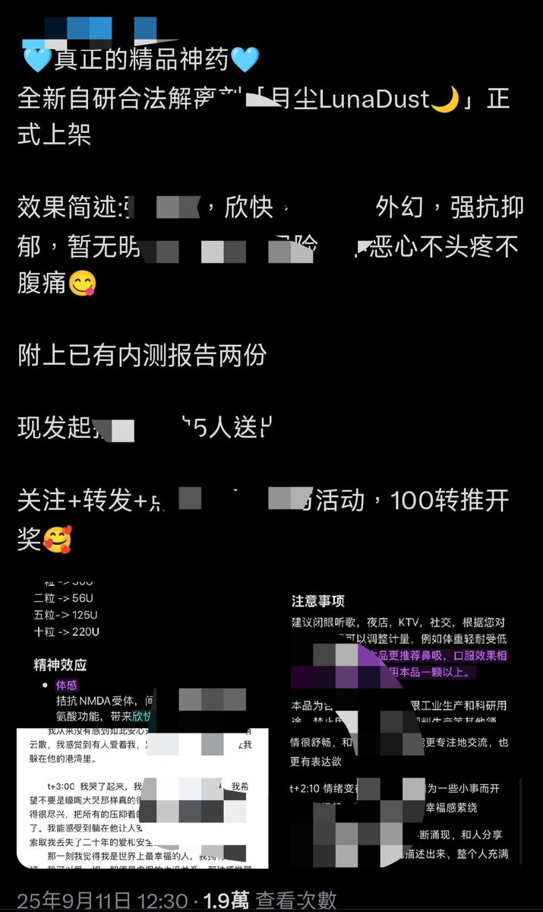

药物百科Mediwiki
@yaowubaike
@overdosewiki 你就猜吧 月尘绝不是列管物质 你们这么说估计是鸡哥给的信息吧 我放给他很多虚假信息混淆视听哦🤣 你们发的时候自己斟酌一下

Overdosewiki_offiziell
@overdosewiki
月尘/雪尘。药名：4-MeO-PCE
本质是K粉衍，其原理毒性不明，和K粉估计大差不差，基本上脑子得被操出脑洞，膀胱也得被尿道小玩具插得报销
已被列管，和你直接去吸K粉同个下场
基本上钱给某些人赚，身体进戒毒所爽吃白粥咸菜
你们某些沐雨家人就吃吧，待会蓝衣找上门尿检板上一条杠你就飞起来吧 https://t.co/DEjTKiHQ35